Quand l'IA change les règles du jeu : un DevFest pour les développeur·euse·s qui bâtissent la tech de demain.
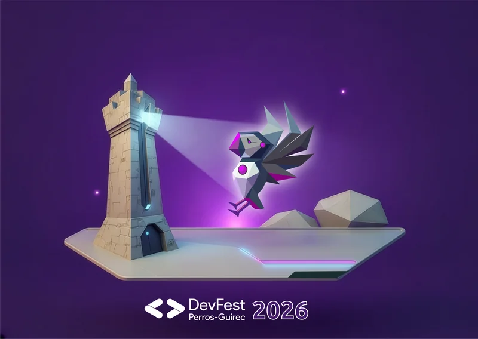
Depuis 2012, Code d'Armor rassemble la communauté tech bretonne autour d'événements ouvert à toutes et tous. Un moment pour apprendre, échanger, tester.
Le programme est construit pour laisser du temps aux discussions : pauses longues, sessions courtes, et un déjeuner face à la mer.
Les développeurs n'ont jamais eu autant de capacité à produire du code… sans nécessairement tout écrire eux-mêmes. Copilotes, génération automatique, agents : l'IA transforme profondément la manière de concevoir, tester et maintenir les applications. Mais derrière ce gain de productivité, une question centrale émerge : comment continuer à créer, penser et décider quand la machine propose déjà des solutions ? Cette conférence propose un pas de recul sur l'évolution du métier de développeur à l'ère de l'IA. Au-delà des outils, nous explorerons l'impact sur la cognition, la créativité et la qualité des décisions techniques. À travers des retours d'expérience et des apports de recherche, nous verrons pourquoi coder avec l'IA ne doit pas devenir un acte passif et comment préserver un rôle actif, critique et créatif dans la construction des systèmes. Objectif : comprendre comment utiliser l'IA comme un levier de créativité, sans perdre la maîtrise de ses choix techniques ni la singularité de ses idées.
Le "vibe coding" — coder en langage naturel et laisser l'IA générer le code — est-il un buzz passager ou une vraie évolution pour les développeurs ? Après 12 mois d'utilisation intensive de Claude Code au quotidien, cette conférence propose un retour d'expérience concret. Nous explorerons les "8 Levels of Agentic Engineering" (Bassim Eledath), un framework qui va du simple auto-complete jusqu'aux équipes d'agents autonomes, en passant par le context engineering et les feedback loops automatisés. À travers des cas pratiques — maintenance de code legacy, refactoring à grande échelle, développement de nouvelles fonctionnalités, validation et tests — on verra ce qui fonctionne réellement, ce qui ne fonctionne pas encore, et où se situent les vrais gains de productivité. On abordera aussi les défis humains : comment faciliter l'adoption dans les équipes, faire évoluer les pratiques de code review, et gérer la confiance envers le code généré. Une session pour prendre du recul et comprendre concrètement comment l'IA agentique transforme déjà le métier des développeurs.
En 2026, demander à une IA de produire du code est devenu trivial. Le vrai problème a glissé : nos agents génèrent du code techniquement correct, bien typé, bien testé, mais parfois à côté du besoin métier : Un workflow qui ignore une contrainte métier, Un composant qui s'adresse au mauvais type d'utilisateur, Une factorisation qui fait sens en théorie mais casse une règle évidente du domaine. Plus on accélère la production de code, plus l'écart entre "code généré" et "besoin réel" devient coûteux. La vraie question n'est plus "comment en générer plus" mais "comment garder le métier au centre quand l'IA accélère tout". Dans ce talk, je raconte 12 mois à configurer un assistant IA sur un produit SaaS médical multi-rôles (React Native + NestJS) avec des contraintes réelles : RGPD, HDS, vocabulaire métier dense (médecins, pharmaciens, admin, csm, lifecycle de demandes). Trois piliers concrets : Le métier au cœur : Comment un glossaire domaine, les tickets Linear et la doc Notion peuvent devenir le contexte que l'agent consulte avant de coder. Une équipe de relecteurs critiques : Au lieu d'un assistant unique et complaisant, plusieurs agents spécialisés qui challengent votre code sur l'architecture, l'UX, la sécurité. Les fondamentaux ne dorment pas : Linters, hooks git, CI : les fondamentaux sont toujours des fondamentaux. Plus précieux qu'avant, parce que l'agent peut casser vos conventions avec assurance.
Les LLM sont à la mode, et soulèvent eux aussi des problèmes de sécurité. Nous en avons pourtant mis dans nos applications, sans nous sentir concernés. Notre code est pourtant souvent à l'origine de nombreuses failles que nous ignorons. Allons les découvrir et les exploiter ensemble, en live sur une application existante. En sortant de cette session, vous serez à même de répondre à ces questions : Qu'est-ce que qu'une faille de sécurité pour un LLM ? Quel est le rôle de l'équipe de dev dans la sécurité ? Quelles sont les bonnes pratiques à appliquer ? Soyez prêts, tous les coups seront permis !
En seconde, j'hésitais beaucoup entre la filière scientifique (pour son éventail de métiers accessibles) et littéraire (pour la section cinéma qui me faisait rêver). J'ai finalement choisi la littérature et le cinéma. Après un parcours académique de 6 ans et un passage au royaume de la célèbre souris américaine, j'ai fini par rentrer dans le monde de l'informatique qui, 6 ans plus tard, se retrouve chamboulé par l'arrivée de l'IA. Cette demoiselle, oh combien précieuse dans notre domaine, nous challenge sur des enjeux écologiques et économiques. Donc comment une pipelette (autant à l'écrit qu'à l'oral) comme moi peut faire en sorte d'utiliser l'IA à bon escient et de manière efficace ? Comment allier précision et claraté ? Parce qu'on va être honnête entre nous : la planète préfère que j'utilise mon cerveau plutôt qu'un demi-litre d'eau pour savoir comme centrer ma div. À la fin de ce talk, vous repartirez avec un pêle-mêle de verbes adjectifs, tournures de phrases qui pourront vous aider à formuler vos phrases de manière précise sans en sacrifier le besoin métier. À vous de mixer les débuts et milieux de phrases, de combler les trous avec vos problématiques, afin de répondre au mieux à votre propre besoin.
L'irruption des LLMs dans le quotidien des étudiants a bousculé nos certitudes d'enseignants en IUT et école d'ingénieurs. Face au risque du "code sans effort", les équipes pédagogiques mènent une réflexion profonde pour réinventer leur posture. Comment maintenir la motivation des apprenants quand la machine fournit la réponse en un clic ? Ce talk flash partagera nos doutes, nos débats et nos pistes de réflexion pour valoriser les compétences conceptuelles des étudiants plutôt que la simple syntaxe. Nous explorerons comment nous envisageons d'intégrer l'usage critique des LLMs au cœur de nos enseignements, pour passer d'une logique de contrôle à une logique d'accompagnement de "développeurs augmentés".
Entre l'explosion du volume de tokens nécessaires aux agents et l'empreinte carbone associée, le mirage de l'IA "gratuite et infinie" s'estompe. Alors, comment tirer parti de la puissance des agents sans faire exploser la facture (économique et écologique) ? Dans cette conférence, nous explorerons les stratégies concrètes pour réduire drastiquement votre consommation de tokens au quotidien. Au programme : L'anatomie du coût agentique : Comprendre pourquoi et comment les agents consomment nos tokens de manière exponentielle. Le toolkit de l'optimisation : Découvrez des outils, plugins et skills pour économiser vos tokens au quotidien, du couplage technique au "retour à l'homme des cavernes". L'architecture de l'efficience : Pourquoi l'intégration de Language Server Protocol (LSP) ou de graphes de connaissances est une arme secrète. Nous prendrons comme fil rouge Claude Code, l'outil en CLI d'Anthropic, mais la majorité des concepts et bonnes pratiques partagés est transposable à d'autres écosystèmes.
En 2021, Copilot m'aidait à terminer des lignes de code. En 2024, je discutais avec lui. En 2025, le Context Engineering a marqué un tournant décisif. Aujourd'hui, en 2026, je ne me contente plus de parler à l'IA — je lui délègue. GitHub Copilot, Copilot CLI, les Skills, les workflows agentiques, les nouveaux modèles... Je suis passé de la simple assistance à la délégation de pans entiers de mon travail, de la création de projets à l'ouverture et la revue de pull requests, le tout en langage naturel. Et je ne suis pas le seul : chez GitHub, nos propres équipes produits utilisent ces mêmes capacités pour livrer plus rapidement et repenser la manière dont les logiciels sont conçus. Ce changement dépasse le cadre des seuls développeurs. Product Managers, SREs, ingénieurs DevOps — ils deviennent tous des bâtisseurs. Il ne s'agit plus seulement d'écrire du code, mais d'exprimer une intention. Dans cette présentation, je vous montrerai ce qui a fondamentalement changé entre 2025 et 2026, et comment cette évolution m'a transformé : d'un développeur doté d'un excellent assistant à un véritable "builder" capable de piloter de nombreux projets et taches en parallèle.
Écrire du code n'a jamais coûté aussi peu. Assistants, agents, flottes d'agents : la production de logiciel s'accélère et la vitesse d'écriture n'est plus le facteur limitant de nos projets. Sans cette limite, est-il devenu trivial de produire du logiciel ? Quand une étape d'un système s'optimise — et à ce point —, les difficultés ne disparaissent pas : elles se déplacent. La réduction du coût d'écriture du code ouvre des portes, mais crée aussi de nouvelles questions. Cette présentation propose d'explorer où se jouent ces nouveaux enjeux, et ce que cela change concrètement pour le métier de développeur·euse. En amont d'abord : si générer du code devient trivial, produire le bon logiciel ne l'est pas — savoir quoi demander devient le vrai travail. Formuler une intention, spécifier un besoin, choisir quel produit mérite d'exister parmi l'infinité de ceux qu'on peut désormais construire : autant de compétences de direction produit qui s'invitent dans le quotidien du développeur. En aval ensuite : un code généré en quelques minutes doit encore être compris, vérifié, maintenu dans la durée. Comment garder confiance dans un logiciel dont on n'a pas écrit chaque ligne ? Comment en conserver la maîtrise ? La revue, la testabilité, la cohérence d'architecture et la pérennité deviennent les nouveaux lieux où se joue la valeur. Entre ces deux pôles, le métier de développeur se redessine : moins d'écriture, plus d'encadrement — des agents comme du code qu'ils produisent. Plutôt que de subir cette transition ou d'y résister à l'aveugle, nous verrons comment « apprendre à danser » avec ces outils : déléguer avec discernement, vérifier avec méthode, and cultiver la compétence qui devient centrale — l'adaptabilité. Une conviction en fil rouge : dans un monde où produire du code est devenu accessible à tous, juger, choisir et faire durer le logiciel reste le cœur de notre métier — et il est profondément humain.
Des profils variés, une même volonté : partager du concret, issu du terrain.
Alexandra Zakharova
Microsoft
David Tavoularis
Mycom
Guillaume Lebourgeois
Pictaderm
Gaëtan Eleouet
Camille Toulouse
OCTO Technology
Vincent Barreaud
ENSSAT
Pierre Alain
IUT Lannion
Clément Juste
Shodo
Tugdual Grall
GitHub
Vincent Hardy
Merci à celles et ceux qui soutiennent le DevFest Perros-Guirec 2026. 🙏
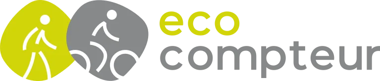
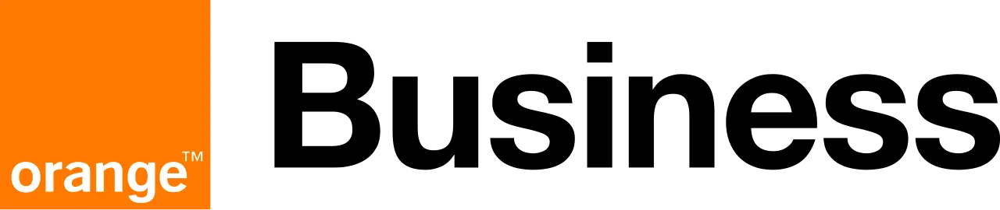
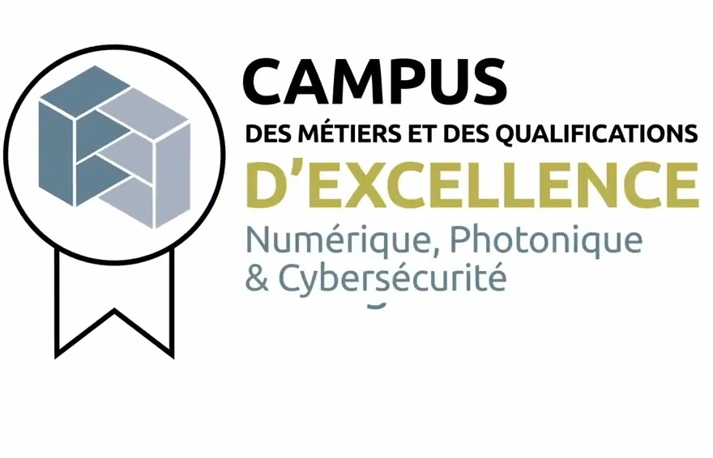
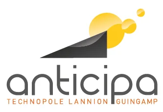
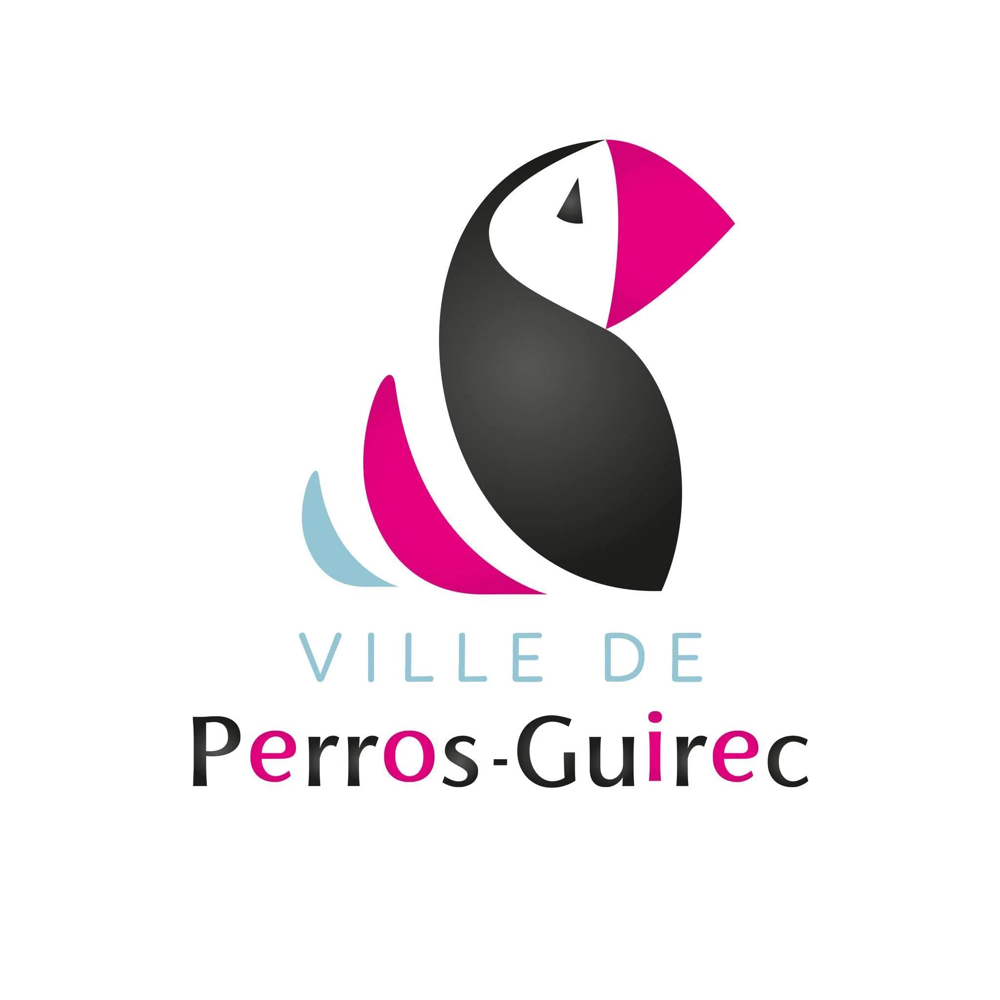
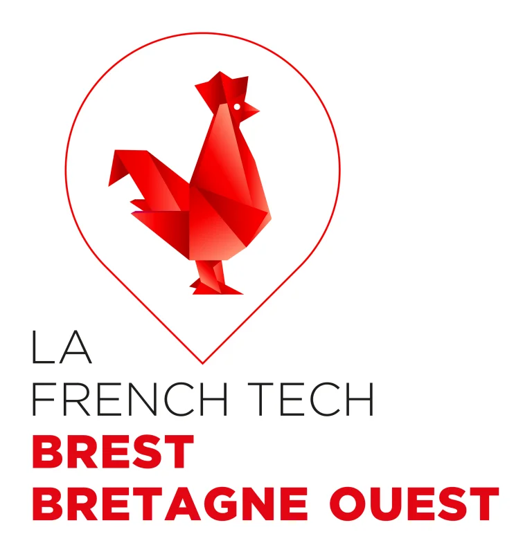
Découvrez les objets à l'image du DevFest Perros-Guirec : t-shirts, mugs, stickers et plus encore pour garder un souvenir de l'événement et soutenir l'association.
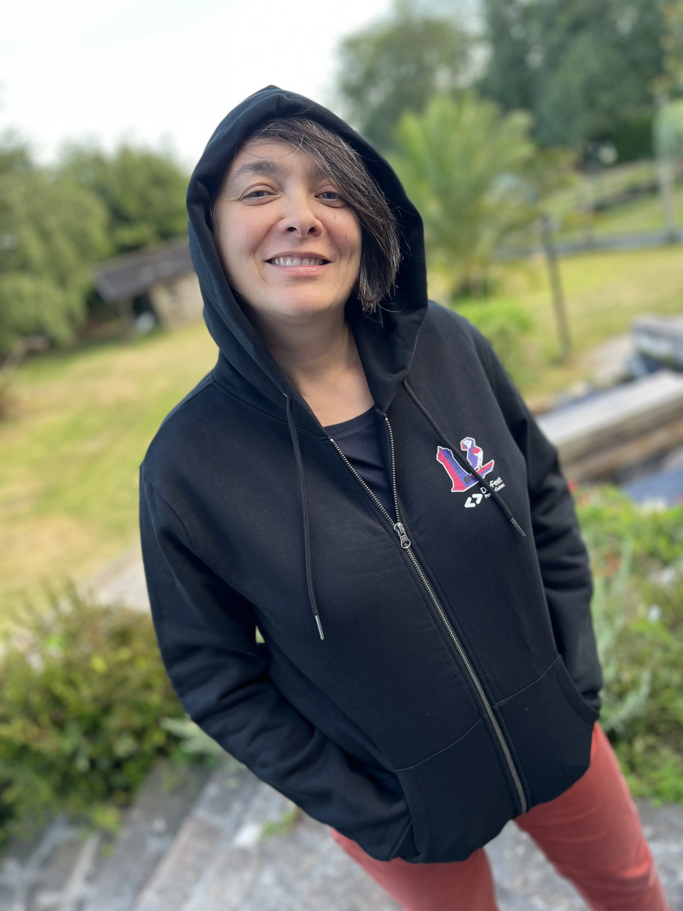
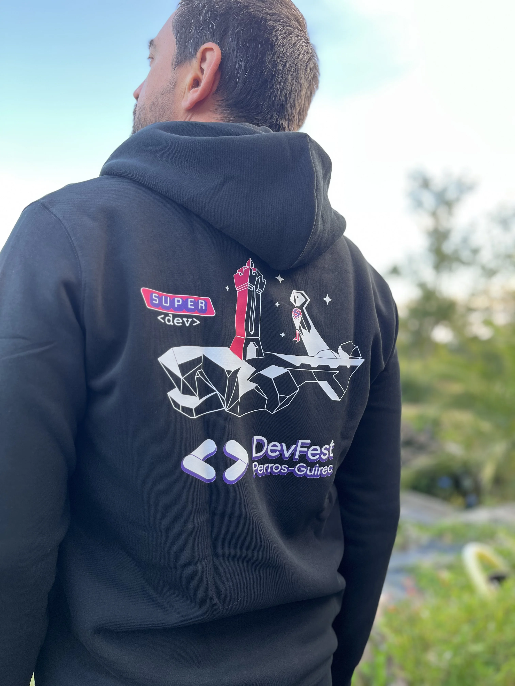
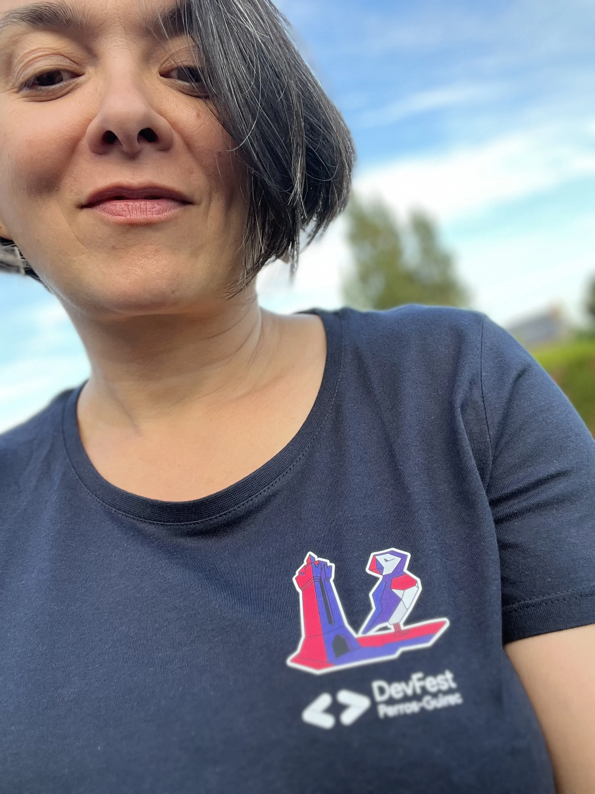
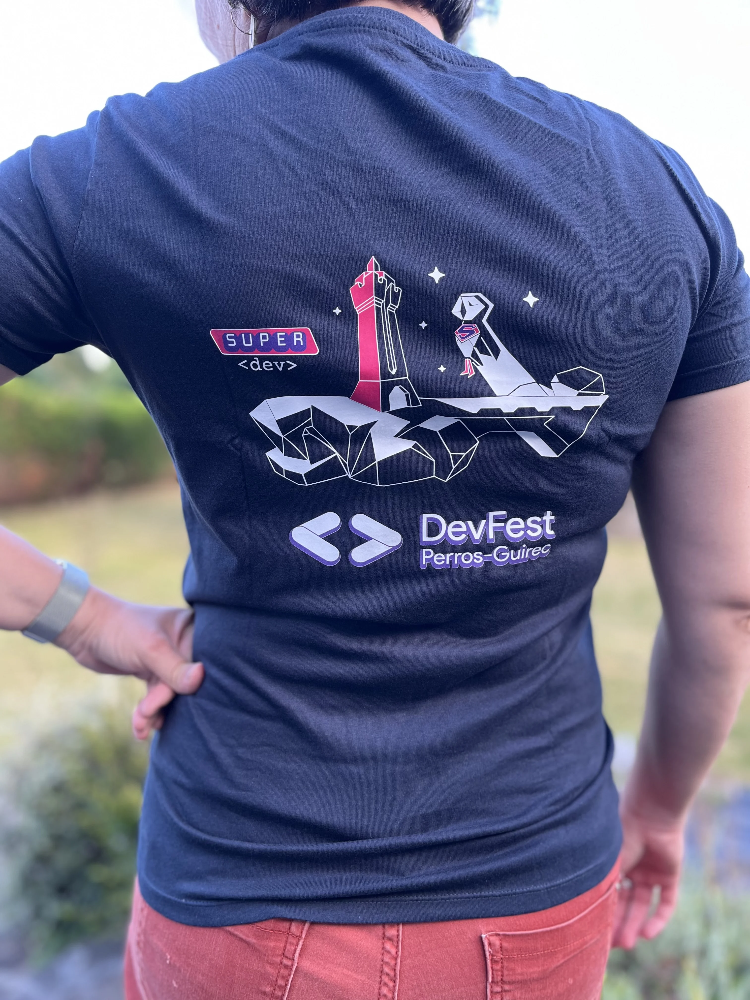
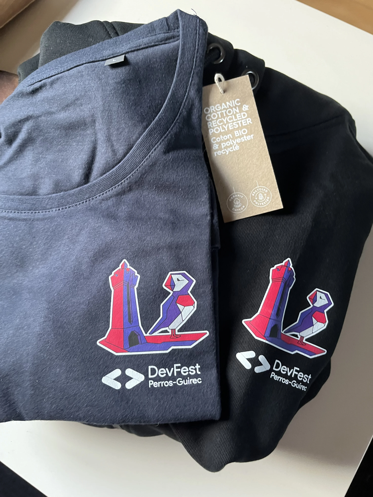
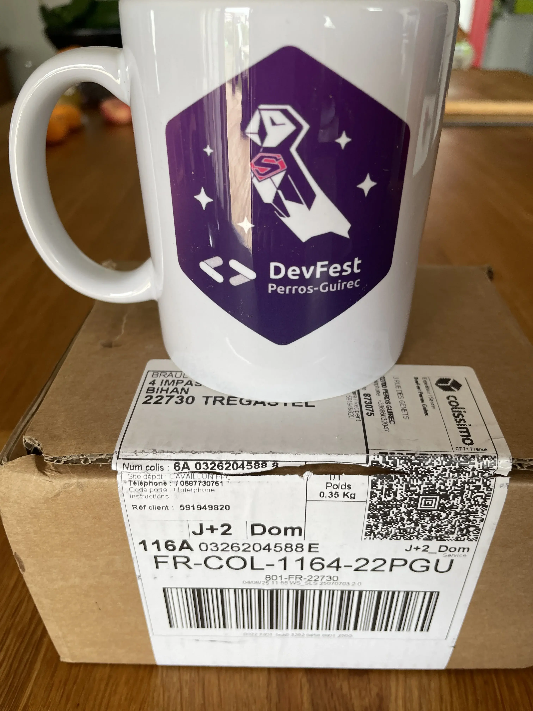
Palais des Congrès de Perros-Guirec
1 Rue du Maréchal Foch
22700 Perros-Guirec
Vendredi 2 octobre 2026
Accueil dès 8h30
Sessions 9h → 17h35
Parking gratuit sur place.
Gare SNCF : Lannion (22km).
🚗 Pensez au covoiturage : conducteurs et passagers.